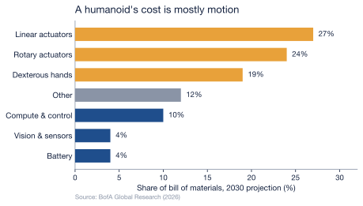

2 The Economics of a Humanoid
Strip away the strategy and a humanoid robot is, at the moment of its birth, a list — a bill of materials naming every motor, bearing, sensor, cell, and screw that has to be bought and bolted together before the machine can stand, walk, or close a hand around a cup. That list is where the two philosophies of Chapter 1 stop being theories and start being invoices. It is also where one of the report’s fastest-moving numbers lives: the cost of building one of these machines is at once very high and falling very quickly.
In early 2024 Goldman Sachs reported that the manufacturing cost of a humanoid had fallen from a range of $50,000–$250,000 per unit to $30,000–$150,000 — the spread running from a basic model to a state-of-the-art one — a roughly 40% drop in a single year, against the 15–20% annual decline the bank had expected (Goldman Sachs, 2024). Whatever else this report concludes, it has to be read against that slope: the economics that will decide the race are not a fixed obstacle but a collapsing one, and the question is which side of the race the collapse favors.
2.1 Opening the machine: the cost is mostly motion
Open the chassis and the money is concentrated in one place — movement. By 2030, Bank of America Global Research projects that linear actuators will be the single largest line in the bill of materials at 27%, with rotary actuators close behind at 24%; the two actuator modules alone are more than half the bill, and the equally movement-driven dexterous hands add a further 19%, so the parts that simply make the robot move come to fully 70% (Bank of America Institute, 2026). Morgan Stanley, working from its own estimates, lands in the same place: actuator modules represent “just under half” of a humanoid’s total cost (CNBC, 2026). Two of the most-watched research desks on Wall Street independently agree that the most expensive thing about a humanoid robot is not its mind but its muscles.
This is the quiet rebuttal to the American wager of Chapter 1. If the foundation model is the moat, the bill of materials says the moat is the cheap part: onboard compute and control come to only about 10% of the projected 2030 bill, while the actuators, precision reducers, and articulated hands that let a robot act in the physical world dominate it (Bank of America Institute, 2026). Intelligence, in other words, is becoming the cheap part of a humanoid — at least to reproduce. A foundation model is enormously expensive to train, but that is a fixed cost spread across every unit it ships in, and following it is the work of the next chapter; each additional body, by contrast, has to be built again from machined metal and precision supply chains, not poured from a finished training run.
A humanoid’s brain is the cheap part. Its body is the bottleneck — and bodies are won in factories, not in data centers.
One number in that breakdown deserves a second look, because it quietly overturns a figure the early drafts of this research took for granted. Batteries are projected to be just 4% of the 2030 bill of materials (Bank of America Institute, 2026), not the 15–20% that older estimates assumed. The reason is the collapse in cell prices documented in Chapter 1: at roughly $94/kWh in China, the energy system has fallen from a major cost center to a rounding error (BloombergNEF, 2024). The same EV-derived battery supply chain that gave China its edge has, across the whole industry, made the battery the least of a robot-builder’s problems.
2.2 Why “the cost” is four different numbers
Ask what a humanoid costs and the published answers scatter from $35,000 to $200,000 — a spread wide enough to make any single figure look invented. The early drafts feeding this report did exactly that, asserting a US build cost of $71,000 against a Chinese $46,150 in one table and far lower numbers in another, with no source either could be traced to. The scatter is not contradiction; it is four honest measurements of four different things, and once they are sorted the picture is coherent.
| Published “cost” | What it actually measures | Figure | Source |
|---|---|---|---|
| China-built BOM, 2025 | Parts only, on a mature supply chain | ~$35,000 | BofA (Bank of America Institute, 2026) |
| Manufacturing range, 2024 | Per unit, basic to state-of-the-art | $30,000–$150,000 | Goldman Sachs (Goldman Sachs, 2024) |
| Pilot-stage development | Parts, before mass production | $90,000–$100,000 | BofA (Bank of America Institute, 2026) |
| Fully loaded, high-income economy, 2024 | Total cost of one finished unit | ~$200,000 | Morgan Stanley (Morgan Stanley, 2025) |
A bill of materials built on China’s mature component base runs about $35,000 today and is expected to fall below $17,000 by 2030 as scale and component redesign compound (Bank of America Institute, 2026). A robot still in pilot-stage development, before any of that scale arrives, costs $90,000–$100,000 in parts alone (Bank of America Institute, 2026). And the fully loaded cost of one finished unit in a high-wage economy — parts, assembly, and everything around them — was around $200,000 in 2024 on Morgan Stanley’s accounting, on a path to roughly $150,000 by 2028 and, in the bank’s longer-range view, $50,000 by 2050 (Morgan Stanley, 2025). The drafts’ $71,000 and $46,150 were not wrong so much as unanchored: points floating inside Goldman’s sourced $30,000–$150,000 band with no stated year, model class, or boundary around what was being counted.
2.3 The geography of a bill of materials
Where a humanoid is built changes its birth cost as much as what it is, and the reason traces straight back to Chapter 1. Morgan Stanley estimates that automotive-parts suppliers can account for close to 60% of a humanoid’s production cost (CNBC, 2026). That is the EV supply chain reappearing as a robot supply chain: the actuators, reducers, cast frames, and battery packs that dominate the bill of materials are, to a large degree, the components a mature car industry already knows how to make at volume. China’s advantage in the body of the robot is the same advantage it built in the body of the car, and it is structural, not merely subsidized. It is also why China’s mature base yields the cheapest bill of materials in that earlier table — a pre-scale pilot build costs nearly three times as much in parts alone — for the simplest of reasons: the lowest bill of materials belongs to whoever already runs the supply chain at volume (Bank of America Institute, 2026).
The bill of materials, though, is only the price of being born. It says nothing about who pays it — and on that question the two superpowers diverge as sharply as they do on everything else. In the United States the build cost is fronted by private capital betting on a platform; in China it is underwritten by the state betting on an industry. The next chapter follows the money.